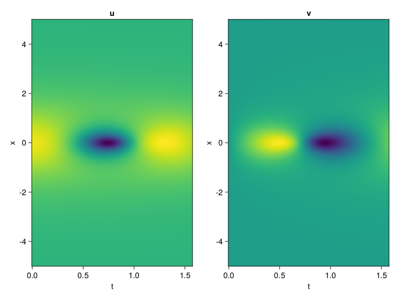
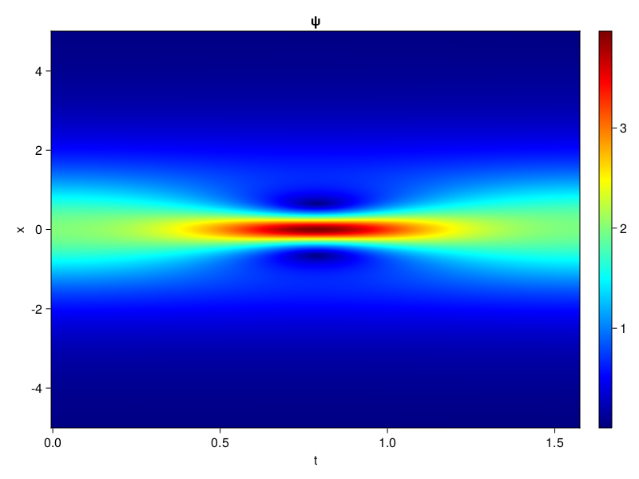
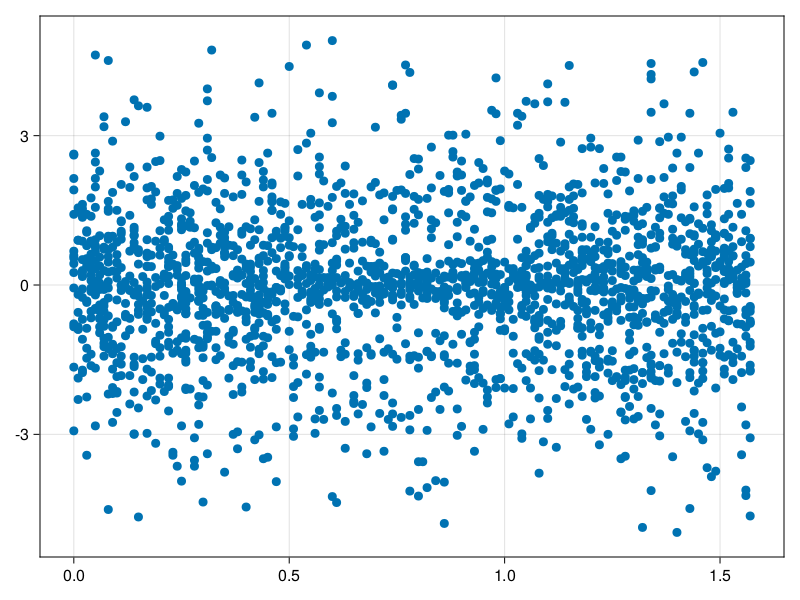

Schrödinger equation
The nonlinear Shrödinger equation is given by
\[\mathrm{i} \partial_t \psi=-\frac{1}{2} \sigma \partial_{x x} \psi-\beta|\psi|^2 \psi\]
Let $\sigma=\beta=1, \psi=u+v i$, the equation can be transformed into a system of partial differential equations
using ModelingToolkit, IntervalSets, Sophon, CairoMakie
using Optimization, OptimizationOptimJL
@parameters x,t
@variables u(..), v(..)
Dₜ = Differential(t)
Dₓ² = Differential(x)^2
eqs=[Dₜ(u(x,t)) ~ -Dₓ²(v(x,t))/2 - (abs2(v(x,t)) + abs2(u(x,t))) * v(x,t),
Dₜ(v(x,t)) ~ Dₓ²(u(x,t))/2 + (abs2(v(x,t)) + abs2(u(x,t))) * u(x,t)]
bcs = [u(x, 0.0) ~ 2sech(x),
v(x, 0.0) ~ 0.0,
u(-5.0, t) ~ u(5.0, t),
v(-5.0, t) ~ v(5.0, t)]
domains = [x ∈ Interval(-5.0, 5.0),
t ∈ Interval(0.0, π/2)]
@named pde_system = PDESystem(eqs, bcs, domains, [x,t], [u(x,t),v(x,t)])\[ \begin{align} \frac{\mathrm{d}}{\mathrm{d}t} u\left( x, t \right) =& - \frac{1}{2} \frac{\mathrm{d}^{2}}{\mathrm{d}x^{2}} v\left( x, t \right) - \left( \left|u\left( x, t \right)\right|^{2} + \left|v\left( x, t \right)\right|^{2} \right) v\left( x, t \right) \\ \frac{\mathrm{d}}{\mathrm{d}t} v\left( x, t \right) =& \frac{1}{2} \frac{\mathrm{d}^{2}}{\mathrm{d}x^{2}} u\left( x, t \right) + \left( \left|u\left( x, t \right)\right|^{2} + \left|v\left( x, t \right)\right|^{2} \right) u\left( x, t \right) \end{align} \]
pinn = PINN(u = Siren(2,1; hidden_dims=16,num_layers=4, omega = 1.0),
v = Siren(2,1; hidden_dims=16,num_layers=4, omega = 1.0))
sampler = QuasiRandomSampler(500, (500,500,20,20))
strategy = NonAdaptiveTraining(1,(10,10,1,1))
prob = Sophon.discretize(pde_system, pinn, sampler, strategy)OptimizationProblem. In-place: true
u0: ComponentVector{Float64}(u = (layer_1 = (weight = [-0.49903249740600586 -0.1002395749092102; -0.26755374670028687 0.23109078407287598; … ; -0.48137497901916504 0.3264288902282715; -0.016688108444213867 0.08809584379196167], bias = [0.0; 0.0; … ; 0.0; 0.0;;]), layer_2 = (weight = [-0.5006018877029419 -0.022068701684474945 … 0.19275644421577454 -0.5374966263771057; -0.18943865597248077 0.49706530570983887 … -0.3023323714733124 -0.011378000490367413; … ; 0.5350158214569092 0.4390990436077118 … 0.21074631810188293 -0.04984472692012787; -0.6034935116767883 -0.36440664529800415 … 0.3880404531955719 -0.03967948257923126], bias = [0.0; 0.0; … ; 0.0; 0.0;;]), layer_3 = (weight = [-0.445690393447876 -0.4179427921772003 … -0.20142649114131927 0.2933097779750824; 0.33639219403266907 -0.2764996886253357 … -0.3354562520980835 0.1529151201248169; … ; 0.5705801844596863 0.49450138211250305 … 0.16199849545955658 -0.024017084389925003; -0.1960173100233078 0.260090708732605 … -0.1391323357820511 0.0646711215376854], bias = [0.0; 0.0; … ; 0.0; 0.0;;]), layer_4 = (weight = [0.5037097334861755 -0.4753721058368683 … 0.30216488242149353 0.21351370215415955; 0.5523163676261902 -0.017803795635700226 … -0.3381985127925873 -0.41390475630760193; … ; 0.004715539049357176 -0.12977498769760132 … -0.15245719254016876 0.4189220666885376; 0.4051125645637512 0.22331774234771729 … -0.463543176651001 0.1648571938276291], bias = [0.0; 0.0; … ; 0.0; 0.0;;]), layer_5 = (weight = [0.11390359699726105 -0.27269312739372253 … -0.30490532517433167 -0.28812500834465027], bias = [0.0;;])), v = (layer_1 = (weight = [0.3921186923980713 0.2386791706085205; -0.08612924814224243 -0.18496417999267578; … ; 0.3728620409965515 0.2700631022453308; 0.24153590202331543 -0.2520869970321655], bias = [0.0; 0.0; … ; 0.0; 0.0;;]), layer_2 = (weight = [-0.009732496924698353 -0.2730928063392639 … 0.470638245344162 0.5062253475189209; 0.24325963854789734 0.07644201070070267 … -0.5670511722564697 -0.29843536019325256; … ; 0.09769383817911148 0.4711698293685913 … -0.3614467680454254 -0.026480194181203842; 0.2062186896800995 -0.2925751209259033 … -0.3888288140296936 -0.3589518070220947], bias = [0.0; 0.0; … ; 0.0; 0.0;;]), layer_3 = (weight = [0.5003604888916016 0.566716730594635 … -0.03568679466843605 0.0074068475514650345; -0.22789646685123444 0.09039335697889328 … -0.4920603036880493 -0.029264213517308235; … ; 0.07779376208782196 0.12754541635513306 … 0.541314959526062 -0.22744619846343994; 0.43402230739593506 0.36811190843582153 … 0.31388556957244873 0.5094267129898071], bias = [0.0; 0.0; … ; 0.0; 0.0;;]), layer_4 = (weight = [0.23974327743053436 -0.40557095408439636 … -0.29198548197746277 -0.3969215452671051; 0.33018890023231506 -0.22621847689151764 … 0.37044867873191833 0.13033629953861237; … ; 0.5757004022598267 -0.07155244052410126 … 0.04304524138569832 -0.26534828543663025; 0.41887128353118896 0.6123713850975037 … -0.0700407475233078 0.5658010244369507], bias = [0.0; 0.0; … ; 0.0; 0.0;;]), layer_5 = (weight = [-0.5112808346748352 -0.447489857673645 … -0.6013602614402771 -0.35087892413139343], bias = [0.0;;])))Now we train the neural nets and resample data while training.
function train(pde_system, prob, sampler, strategy, resample_period = 500, n=10)
bfgs = BFGS()
res = Optimization.solve(prob, bfgs; maxiters=2000)
for i in 1:n
data = Sophon.sample(pde_system, sampler, strategy)
prob = remake(prob; u0=res.u, p=data)
res = Optimization.solve(prob, bfgs; maxiters=resample_period)
end
return res
end
res = train(pde_system, prob, sampler, strategy)u: ComponentVector{Float64}(u = (layer_1 = (weight = [-0.7389725403030433 0.17447909438792694; -0.11021557642252382 -0.13706489427422944; … ; -0.472953127827411 -0.05125887775372868; -0.25520397533336925 0.032928177369655094], bias = [-0.2386902954323959; 0.01676249770899976; … ; 0.05028744261575953; -0.2597394374115372;;]), layer_2 = (weight = [-0.7909920469399548 -0.04716041412992555 … 0.4003335342618684 -0.7203755191545984; -0.10770229515273749 0.34490754660754697 … -0.34198974669334814 -0.12823088272030586; … ; 0.7190417432727997 0.419711194608541 … 0.013717690961484697 0.044294113002893924; -0.4327693923508409 -0.2510539547320959 … 0.42342511780575537 -0.04898574069247938], bias = [0.2803802473938068; 0.17332613921086482; … ; -0.16110089749646872; -0.20044859135433835;;]), layer_3 = (weight = [-0.7784836560836561 -0.7745413882604258 … 0.23165112571318477 0.45500067126869703; 0.16943767825516007 -0.1396422896088656 … 0.09375007345003038 0.2811248690279056; … ; 0.48147544142273063 0.3279019764966927 … 0.2044928215270422 -0.13538988081354625; -0.42893107270840036 0.29138190887395227 … -0.16880071743756797 -0.1362103610550473], bias = [0.12618611508593566; 0.14311165254317512; … ; -0.056953945033210523; -0.1720954477531378;;]), layer_4 = (weight = [0.7480467578796804 -0.35177801979967327 … 0.1260074452785471 0.03463932901708992; 1.445649050193067 -0.10004195426534397 … 0.4017241051158544 -0.694410733547569; … ; 0.2265735379109201 -0.14408255967241057 … -0.04210341392682487 0.44059913184085076; 0.5971187424482584 0.07041247693381279 … -0.3580342225247787 0.39420426800987307], bias = [0.13585705981125262; -0.044646483577489286; … ; -0.03147504228612773; -0.159888372957081;;]), layer_5 = (weight = [-0.2704076218736159 -0.34537857075815864 … -0.09023493877899683 -0.7751161139835709], bias = [0.12325719706194957;;])), v = (layer_1 = (weight = [1.3550475632062375 -0.2789493867574023; -0.4749732842667687 -0.11500689355148569; … ; 1.0277145687694142 0.5093537382894561; 0.36534580789169324 -0.14341288451743972], bias = [0.2699403069390294; -0.028384229501136417; … ; -0.4266473182084579; 0.14897648811802097;;]), layer_2 = (weight = [0.3194604253359254 -0.4440214063117247 … 0.1759740813373544 0.7073876554636196; -0.2713944615372431 0.4887311626384875 … -0.589182820488129 -0.6632540885578437; … ; 0.23819516746437483 0.5737903713935782 … -0.03381940959913565 0.20541765830258857; 0.11642287285597307 -0.14817462987883454 … -0.18450447759370128 -0.3589207955703287], bias = [-0.20125670154312048; -0.10060183184189966; … ; 0.20575573545483525; -0.1253799718247166;;]), layer_3 = (weight = [0.8959368534774665 0.6014254325570608 … -0.4390684571222572 0.30334017142483505; -0.47541151135788184 -0.1766289029670049 … -0.38972523231664485 -0.003100646978075088; … ; -0.2381012491423792 -0.09033409688807818 … 0.21472205006125578 -0.2187509057744846; 0.2382452843618573 -0.127741891095346 … 0.48060310083368596 0.4748436735477785], bias = [-0.5997464092453241; 0.0019066179341787996; … ; 0.34781736816826236; -0.030539354593773056;;]), layer_4 = (weight = [0.18770309832220541 -0.05365129558768867 … -0.09581701884929787 -0.08480239742951999; 0.727041555079285 -0.3786086856056353 … 0.6225410136451242 -0.07184837307123265; … ; 0.5731679688579991 -0.10941715575286455 … 0.22413014130773093 -0.5222848361518959; 0.11331706394849972 0.10205726985779784 … 0.05402578998582616 0.4505431892173853], bias = [-0.09292076708084661; -0.09835730103153738; … ; 0.44436811275192095; 0.0725986027044282;;]), layer_5 = (weight = [0.15911006245383374 -0.3595578654701932 … -0.7476967491155726 -0.1532417382760453], bias = [0.20367411934003485;;])))phi = pinn.phi
ps = res.u
xs, ts= [infimum(d.domain):0.01:supremum(d.domain) for d in pde_system.domain]
u = [sum(phi.u(([x,t]), ps.u)) for x in xs, t in ts]
v = [sum(phi.v(([x,t]), ps.v)) for x in xs, t in ts]
ψ = @. sqrt(u^2+ v^2)
axis = (xlabel="t", ylabel="x", title="u")
fig, ax1, hm1 = CairoMakie.heatmap(ts, xs, u', axis=axis)
ax2, hm2= CairoMakie.heatmap(fig[1, end+1], ts, xs, v', axis= merge(axis, (; title="v")))
display(fig)
axis = (xlabel="t", ylabel="x", title="ψ")
fig, ax1, hm1 = CairoMakie.heatmap(ts, xs, ψ', axis=axis, colormap=:jet)
Colorbar(fig[:, end+1], hm1)
display(fig)
Customize Sampling
Bascially any sampling method is supportted.
using StatsBase
data = vec([[x, t] for x in xs, t in ts])
wv = vec(ψ)
new_data = wsample(data, wv, 2000)
new_data = reduce(hcat, new_data)
fig, ax = scatter(new_data[2,:], new_data[1,:])
prob.p[1] = new_data
prob.p[2] = new_data
prob = remake(prob; u0 = res.u)
# res = Optimization.solve(prob, bfgs; maxiters=1000)OptimizationProblem. In-place: true
u0: ComponentVector{Float64}(u = (layer_1 = (weight = [-0.7389725403030433 0.17447909438792694; -0.11021557642252382 -0.13706489427422944; … ; -0.472953127827411 -0.05125887775372868; -0.25520397533336925 0.032928177369655094], bias = [-0.2386902954323959; 0.01676249770899976; … ; 0.05028744261575953; -0.2597394374115372;;]), layer_2 = (weight = [-0.7909920469399548 -0.04716041412992555 … 0.4003335342618684 -0.7203755191545984; -0.10770229515273749 0.34490754660754697 … -0.34198974669334814 -0.12823088272030586; … ; 0.7190417432727997 0.419711194608541 … 0.013717690961484697 0.044294113002893924; -0.4327693923508409 -0.2510539547320959 … 0.42342511780575537 -0.04898574069247938], bias = [0.2803802473938068; 0.17332613921086482; … ; -0.16110089749646872; -0.20044859135433835;;]), layer_3 = (weight = [-0.7784836560836561 -0.7745413882604258 … 0.23165112571318477 0.45500067126869703; 0.16943767825516007 -0.1396422896088656 … 0.09375007345003038 0.2811248690279056; … ; 0.48147544142273063 0.3279019764966927 … 0.2044928215270422 -0.13538988081354625; -0.42893107270840036 0.29138190887395227 … -0.16880071743756797 -0.1362103610550473], bias = [0.12618611508593566; 0.14311165254317512; … ; -0.056953945033210523; -0.1720954477531378;;]), layer_4 = (weight = [0.7480467578796804 -0.35177801979967327 … 0.1260074452785471 0.03463932901708992; 1.445649050193067 -0.10004195426534397 … 0.4017241051158544 -0.694410733547569; … ; 0.2265735379109201 -0.14408255967241057 … -0.04210341392682487 0.44059913184085076; 0.5971187424482584 0.07041247693381279 … -0.3580342225247787 0.39420426800987307], bias = [0.13585705981125262; -0.044646483577489286; … ; -0.03147504228612773; -0.159888372957081;;]), layer_5 = (weight = [-0.2704076218736159 -0.34537857075815864 … -0.09023493877899683 -0.7751161139835709], bias = [0.12325719706194957;;])), v = (layer_1 = (weight = [1.3550475632062375 -0.2789493867574023; -0.4749732842667687 -0.11500689355148569; … ; 1.0277145687694142 0.5093537382894561; 0.36534580789169324 -0.14341288451743972], bias = [0.2699403069390294; -0.028384229501136417; … ; -0.4266473182084579; 0.14897648811802097;;]), layer_2 = (weight = [0.3194604253359254 -0.4440214063117247 … 0.1759740813373544 0.7073876554636196; -0.2713944615372431 0.4887311626384875 … -0.589182820488129 -0.6632540885578437; … ; 0.23819516746437483 0.5737903713935782 … -0.03381940959913565 0.20541765830258857; 0.11642287285597307 -0.14817462987883454 … -0.18450447759370128 -0.3589207955703287], bias = [-0.20125670154312048; -0.10060183184189966; … ; 0.20575573545483525; -0.1253799718247166;;]), layer_3 = (weight = [0.8959368534774665 0.6014254325570608 … -0.4390684571222572 0.30334017142483505; -0.47541151135788184 -0.1766289029670049 … -0.38972523231664485 -0.003100646978075088; … ; -0.2381012491423792 -0.09033409688807818 … 0.21472205006125578 -0.2187509057744846; 0.2382452843618573 -0.127741891095346 … 0.48060310083368596 0.4748436735477785], bias = [-0.5997464092453241; 0.0019066179341787996; … ; 0.34781736816826236; -0.030539354593773056;;]), layer_4 = (weight = [0.18770309832220541 -0.05365129558768867 … -0.09581701884929787 -0.08480239742951999; 0.727041555079285 -0.3786086856056353 … 0.6225410136451242 -0.07184837307123265; … ; 0.5731679688579991 -0.10941715575286455 … 0.22413014130773093 -0.5222848361518959; 0.11331706394849972 0.10205726985779784 … 0.05402578998582616 0.4505431892173853], bias = [-0.09292076708084661; -0.09835730103153738; … ; 0.44436811275192095; 0.0725986027044282;;]), layer_5 = (weight = [0.15911006245383374 -0.3595578654701932 … -0.7476967491155726 -0.1532417382760453], bias = [0.20367411934003485;;])))